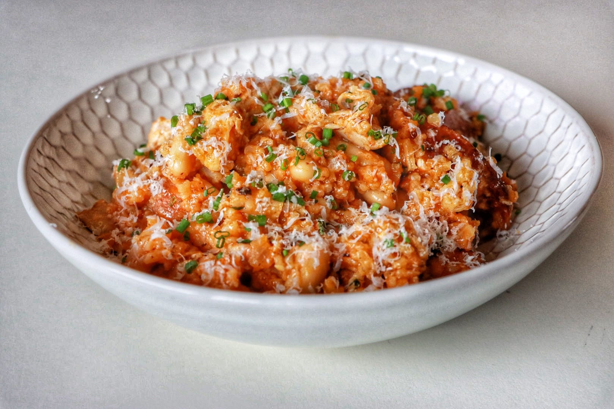

Chicken Sausage, Braised Chicken Thigh & Red Rice
Chicken-Sausage-Braised-Chicken-Thigh • Serves 3–5 • One-Pan Meal
Braised chicken thighs, smoked sausage, and rice cooked in tomato and stock—this one-pan dinner is built on value cuts and technique. Hard browning, toasted tomato paste, and stock-soaked rice give you a dish that eats like much more than the sum of its parts.

Ingredients (3–5 servings)
- 1.25 lb boneless chicken thighs
- 1 lb andouille sausage
- 1 cup long-grain white rice
- 1 can cannellini or white beans, drained and rinsed
- 1 small onion, diced
- 2 cloves garlic, minced
- 2 tbsp tomato paste
- 2¼ cups chicken stock (hot)
- 2 tbsp olive oil
- 1 tsp paprika (smoked if possible)
- ½ tsp cumin
- Pinch red pepper flakes
- Kosher salt and black pepper
- Optional finish: chopped parsley or a squeeze of lemon
Method
1. Brown the chicken
- Pat the chicken thighs dry and season generously with salt and pepper.
- Heat the olive oil in a wide, heavy skillet over medium-high heat.
- Brown the thighs until deeply golden, about 4–5 minutes per side.
- Remove the chicken and set aside.
2. Brown the sausage
- In the same pan, add the sliced andouille sausage.
- Cook until it takes on good color, then remove and set aside with the chicken.
- Do not wipe out the pan—you want the browned bits.
3. Build the red base
- Add the diced onion to the pan and cook until soft and lightly caramelised.
- Add the minced garlic and the tomato paste.
- Cook the tomato paste until it turns dark brick-red and smells sweet, 2–3 minutes.
4. Toast the rice
- Stir in the paprika, cumin, and red pepper flakes.
- Add the rice and stir until glossy and well coated, about 30–60 seconds.
5. Braise and simmer
- Pour in the hot chicken stock, scraping up any browned bits from the bottom of the pan.
- Nestle the browned chicken thighs back into the pan.
- Scatter the sausage around them.
- Cover, bring to a simmer, then reduce heat to low and cook for 18–20 minutes, until the rice is tender.
6. Finish with beans
- Stir in the drained beans during the last 5 minutes of cooking, just to warm through and help bind the dish.
7. Rest and serve
- Turn off the heat and let the pan rest, covered, for 5 minutes.
- Fluff the rice, finish with black pepper and chopped parsley or a squeeze of lemon if you like.
- Serve straight from the skillet.
Why it works: The tomato paste, toasted until dark, plus smoked sausage fat and spices, turns the rice into a red, pilaf-style base that tastes way richer than its ingredient list suggests.